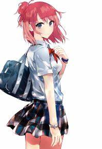

角色形象
外貌衣着
浅桃色发长度及肩，有微微烫过的痕迹，走动时会轻轻摇动，而且这样的颜色看起来十分明快，并且被绑成团子状 ，团子头上经常绑着黑色发带 。衣服总会有两三个扣子没扣上 ，雪乃也认为结衣是个花哨的女孩 ，平时穿的都是短裙，但换上了网球服或者女仆装却会觉得太短了而感到害羞 。总挂着带心形事物的项链 ，手机上有个类似蘑菇玩偶的吊带 。
自从向由美子表达出自己的真实想法后，结衣的妆变得没有以前那么浓，这也是她有所改变的证明，素颜时的由比滨笑起来时眼睛会下垂，使她脸上更添了几分幼稚。
因为她在男生中相当有人气，不少男生向由比滨搭话约她出去玩 ，户部翔也评价过她是质朴的女孩子很有人气，所以竞争率很高 。
同时结衣还是个表情丰富的女生，与雪之下形成轻松的对比，平时总是带着傻兮兮缺根筋的笑容，一脸什么烦恼都没有的样子 。也正是有了结衣这样的存在，侍奉部才显得不那么冷清。
性格特点
身处于以由美子为首的女生现充集团里，为了自我保护以及维持相应的朋友关系，经常迎合别人，不自觉地就看着别人的脸色行事，常常不能坦率的表达自己，如果不这样做就会感到不安。也正是因为这样的环境下，结衣做事总是小心翼翼的，初次来到侍奉部的时候就是畏首畏脚、东张西望的，来到料理室的时候就像一个孩子来到陌生的地方一样。还非常缺乏自信，认为自己做曲奇很奇怪，不断的想要放弃。除此之外，性格上会流露比较天然的样子，偶尔也会有一点点傲娇害羞的表现，找八幡要电话号码也是扭扭捏捏不好意思，很容易害羞。 平时反应也比较迟钝，行动上也是犹犹豫豫的，进行文化祭分工的时候，班长想要推荐由比滨担任女生委员，还表现出犹豫不决的样子，后来被由美子说要一起去拉客人所以不能胜任，但一瞬间竟然认同了，几秒种后才反应过来。
在八幡眼里，结衣是个笨蛋，经常怀疑结衣是怎样考上总武高的。不过平时看起来很傻的结衣却也有着自己内心复杂想法的一面，在烟花大会后，结衣似乎有着很重要的话对八幡说，但是被母亲的电话打断。 对做一件事没什么恒心，参与彩加的训练的时候，但不久就厌烦了，变成了大部分时间里都在雪之下旁边睡觉。虽然如此，但工作的时候还是会相当认真，在体育祭工作中，会在许多方面都积极露面，忙碌于调整安排以及工作之中。而且，自从第一次委托任务后，结衣也就开始决定用自己的力量、自己的方式努力，这种努力的结果就是在三人约会的时候结衣自己亲手做的曲奇，
和曾经的料理相比有了非常大的改善，这一点也得到了雪乃的认可和向往，对于雪乃来讲，此时的结衣十分耀眼。 有着相当温柔的一面，八幡曾不止一次两次提到过，因为确实是个非常温柔的人，对身边的每个人都很温柔，误会了的不受欢迎的男生特别容易上钩，也正是因为这种温柔，才会把有些事藏在心里独自承受，结衣有一种自己特有笑法“苦手”，这是每次打算蒙混过一些事情时才有的表现。虽然经常被八幡认为是个很温柔的人，但结衣自己有时却并没有这么认为，三人一起约会的时候，就对八幡说过自己并没有他想象的那么温柔。 非常在乎朋友，这里不仅仅是八幡、雪乃，还包括由美子、海老名等等，并且比起自己的事，会把其他的事情看做优先，即使不喜欢相模南，也会把她当做朋友，因为是朋友。
而且每当雪受到了别人话语的伤害，她都会挺身出来厉声制止，即使是由美子也毫不例外。雪乃对她的评价是考虑不周，又不够慎重，经常不经过思考想说什么就说什么，别人的私人领域也毫不在意的踏进去，随后又随便糊弄过去，最后又引起骚动，虽然有各种各样的缺点，但并不是坏孩子。
日常生活
对料理很不擅长，而且对自己的料理毫无自觉性，比起选择做法和菜目，更要命的是胡乱加新秘方的问题。甚至连围裙都不会系，还曾把雪乃所说的“醒面团（发面）”和睡觉联系在一起。大概是因为母亲在家里做着家庭主妇，结衣没有那个必要学习料理之类的东西，虽然平时是总看着母亲平时削梨的动作，但自己没有动手尝试过，等到了真正应用的时候，却把梨削得坑坑洼洼的，可以说是在反料理方面很有天赋。在八幡眼里，结衣的料理，已经不是能力足不足的问题，应该说从一开始就不存在。因此，对于结衣的料理，雪乃和八幡都要下很大的勇气才能吃下去。 由于经常迎合别人的这种特点，也练就了结衣善于看着别人的脸色行事，
因此能够很好的融入到由美子的集团中，并且还有着相当厉害的阅读气氛的技能以及不会让人觉得不快的心眼，而且虽然很大程度上是为了自我保护，但不让八幡成为目标的意义上也很充分。 在受到了侍奉部的帮助后，想要作为回报，结衣会常来侍奉部活动室帮忙，
而且常常坐在靠近雪乃的一边，虽然由比滨自认为自己已经是部员，但被雪之下完全否定了，
因为即没有入部申请，也没有顾问老师的批准，结衣知道之后才写的申请书。 “呀Hello”是结衣向他人打招呼的常用方式，比企谷小町也曾用过这样打招呼的方式回应过她，就连雪乃也受到了影响，差点也用此种方式向她打招呼。但这种方式似乎只会用在早晨之外的时间。 喜欢狗，因为结衣觉得狗很可爱，并且加中还养了一条狗，叫“萨布雷”。但似乎很害怕猫，因为在结衣孩童的时候，以前住的住宅区不准养动物，暗地里养猫很流行，结衣也瞒着双亲偷偷养野猫，但不知何时猫不见了，这见事对于由比滨来说心情很复杂，和八幡谈论这件事的时候也会露出真实的悲伤和温柔。 很喜欢迪士尼乐园，还和八幡在潘先生周边店里约好以后还会再次来游乐园玩。
人际关系
在一年级的时候就和相模南是班上显眼的那一派，但两人关系说不上好也谈不上坏，因为结衣不仅是因为容姿，而且很擅长迎合别人。现在经常与班里足球部结伴而行，曾经为了能够维持与由美子的关系特意迎合她。正是因为这样在班里有自己的立场，所以有时候也没办法完成雪乃交给的任务。而且夹在朋友与朋友之间的她也时常感到无奈，在和大家去迪士尼乐园的时候，
因为不好只站在彩羽这边，所以也叫上了由美子等人。也许是做为学姐，所以比较照顾彩羽。 与八幡和雪乃似乎很有缘，三个人在相识之前就被一场车祸联系在了一起，出事的是结衣的狗，救狗的是八幡，而肇事的则是雪乃家的包车。加入侍奉部之后，之后便一直在侍奉部帮忙，而且本人也有了改变。很喜欢粘着雪之下雪乃，而且很多方面觉得雪乃很厉害，十分崇拜，并且亲切称呼雪乃为“小雪”，虽然雪乃感到不自在，但也慢慢接受了。
经常向雪乃撒娇，也是向这样的撒娇，雪乃也经常被攻陷，八幡觉得雪乃实在是太惯着结衣了，有时还会觉得两人带有百合属性。结衣自己似乎比自己想象中的要更喜欢雪乃，还会像个小孩子一样讨厌别人和雪乃的关系好，很重视雪乃，和由美子比赛网球的时候说过雪乃是朋友才把重要的事拜托给她，
发脾气生气的时候几乎都是因为雪乃，还会挺身而出斥责伤害雪乃的人，雪乃生病的时候，在雪乃家门前好像扑过去一样地询问雪乃的情况，
等待门打开的时候也是瞪着手机上的时间。虽然结衣自己很喜欢八幡，但也明白雪乃的心情，曾对八幡试探性的询问自己是否在情人节那天有时间感到有些意外和高兴，但考虑到了雪乃而又显出了消沉。 称呼八幡为“小企”，并且很在乎八幡和雪乃的关系，曾在宠物店遇见八幡和雪乃两人周末在一起，因此误会两人是在交往，这件事还差点让结衣退出侍奉部，
但后来得知了这只是个误会而偷偷的感到高兴。可见结衣已经喜欢上了八幡，心情也随着八幡的态度改变，在第一次来到活动室里就询问过八幡对居家型女孩的看法，八幡回答男生会很憧憬，自己也并不讨厌，这让结衣露出了安心的微笑；听说了八幡和其他女孩子通过邮件，会感到伤心，并且还因此抽泣了起来，听到折本说送给过八幡巧克力，也会比较在意。因为八幡答应给她发邮件而感到害羞和期待，但又因为发送的东西只是很简单的业务联络而失望。
小说第八卷中八幡守护了侍奉部，结衣流露出了对八幡强烈的情感，还帮他梳理头发，
并温柔的对他说“我的重要场所，确实被守护了呢”，并对八幡连续说了两次“小企努力了啊！”。对于这样的温柔，八幡开始并不理解结衣的温柔，还因此伤害过结衣。但即使如此，侍奉部依旧是结衣重要的场所，结衣觉得雪乃会主动靠近自己，所以决定去等待这一天的到来，但对于无动于衷的八幡，结衣决定主动靠过去。在侍奉部帮助彩羽完成免费情报志编辑工作，结衣对八幡说不愿意他那么辛苦，双手还抚着他的肩膀。
显然结衣对八幡的感情已经很深了。 关于侍奉部三人的情感关系，在第二季动画最后一话中，结衣面对这样的八幡和雪乃意识到如果这么下去，那么自己就必须离开了。不过结衣真心希望能够跟八幡交往。即便无法实现这种想法，至少也想继续维持目前三个人的关系，非常珍惜三人在一起的日子，常常提到三人能够在一起。在结衣的心中，有着“不要把我扔下”的仿佛哭喊出来的情绪。对于这种心情，她自己进行了梳理，以平和的话语说了出来。
不过在这一刻，她目睹到了雪乃和八幡心灵相通的交流。尽管她早就知道，却仍然会心痛。作者渡航对这个场景说过结衣在这儿是为了自己说出这段话的，虽然这并不对，但依然说出来了。虽然很狡猾，但依然说出来了。此时的结衣也变了。在角色歌曲《エブリデイワ�`ルド-Ballade Arrange-Yui Solo Ver.》中的那句“比起真相，请给我温柔的谎言”虽然显得非常安静，但联系到剧情里，八幡说“我希望得到u2018真物u2019”，那对结衣来说，回应的也就是“请给我谎言”。在结衣追问雪乃：“小雪乃，这样可以吗？”，她的发言恰恰就是“温柔的谎言”。